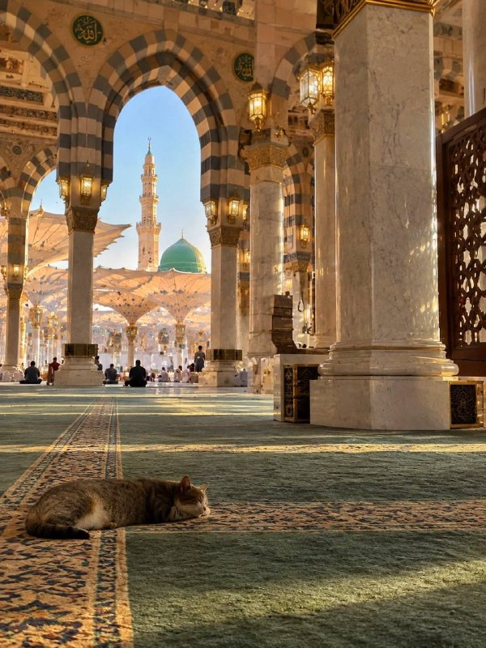

Boşimizga tuşgan eng oğir vaziyatlarda nima qiliş lozim?

Boşimizga tuşgan eng oğir vaziyatlarda nima qiliş lozim?
Maqbul axloq inkişofi
1. Eski döst bölib, endi duşmanga aylangan odam haqida gapirmaslik.
Çunki –
ertaga qayta ora yaxşilanib ketar!
senga qilgan yaxşiliklarining hurmati yöqmi?
2. Eski kelişuvlarda sir saqlaymiz deb aytilgan sirlarni aslo foş qilmaslik.
Çunki –
bu eng avval seni şarmanda qiladi, bu işni qilgan xor, qilmagan aziz böladi.
raqib tomon seni tan olişga majbur böladi aynan şu omil sababli.
Olamda sening siringni foş qilaman deya tahdid qilişdek axloqsizlik bölmagani kabi bu işni qilişdek tubanlik ham yöqdir.
Agar falon işni qilmasang, omma oldiga çiqib aytaman deyiş kabi bir ahmoqlik, bir kaltafahmlik yöq.
Buning İslomga aloqasi yöq, çunki islom farosat ustidagi dindir.
Bu hatto diplomatiya ham emas, hatto taktika ham emas.
Tuzatiş va tarbiyaning yöli emas bu.
İsloh va dono boşqaruv emas bu.
Buning eng muloyim vasfi sabiylik xususiyatidir.
3. Qaror bermaslik.
Çunki –
musibat tanadagi savdo deb atalgan qora rangli suyuqlikni oşiradi.
savdoyi odamdan ziyon zuhur qiladi.
4. Miya sovuşi uçun sukut qiliş hamda tinçlanib oliş uçun xilvatga boriş yoki muqobil biror töğri işni qiliş.
Çunki–
gapiriş seni ojiz körsatadi.
axloqingdagi nuqson foş böladi.
5. Döstlarni sotmaslik, qörqmaslik, har qanday holda ham birovning şa’niga doğ böladigan xatoni ommaga zikr qilmaslik, imkon bölsa, heç kimga aytmaslik.
Çunki –
axloqsiz işlarni foş etiş odamlar qalbini qoraytiradi.
işonçlarni söndiradi.
sen gunohni körding, ammo tavbani körmading, balki tavba qilgandir?!
Maqsad isloh ekan, hamişa tuzatiş yölini öylamoq kerak.
Kasalni tuzatişga ham vaqt kerak.
Odamlarga ham tuzalmoqlari uçun vaqt beriladi.
Zotan, Alloh ne-ne ma’siyatlaringni hali foş etmadi, çunki u Zot tavba uçun senga vaqt beryapti.
Tavfiq Allohdan.
İldirma:
Bu yodlangan gaplar emas, tajribaning, qonli közyoşlar va uyqusiz azobnok tunlar nasihatidir.
Akrom MALİK